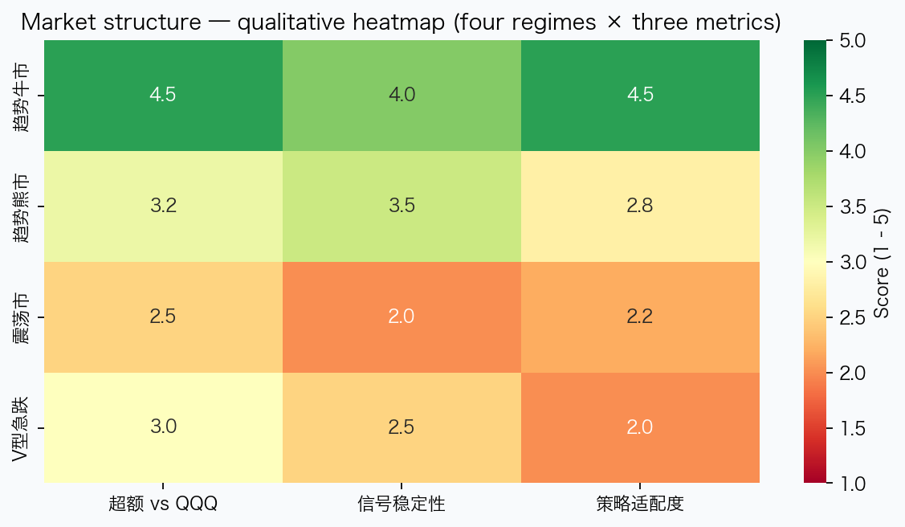
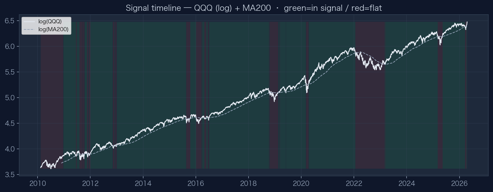

03 · 3.3
市场结构分析
Regime heatmap · Signal timeline 2010–
F
四种市场结构 × 三类指标
示意性评分（1–5），用于归纳策略适配度，非单一区间回测数字

趋势牛市
均线斜率与价格同向，信号连续性强；LRS 易吃到 TQQQ 趋势段，需关注追高与回撤。
趋势熊市
价格持续低于均线，策略以空仓为主；相对基准的关键是少亏时间。
震荡市
均线附近来回，易出现 Whipsaw；连续三日确认规则用于过滤假突破。
V 型急跌
急跌后快速反弹，均线滞后；可能出现晚入场或反复扫损，尾部风险需单独压力测试。
G
信号时间轴（QQQ 对数 + MA200）
绿底：信号为真（可持仓逻辑区间）；红底：信号为假
